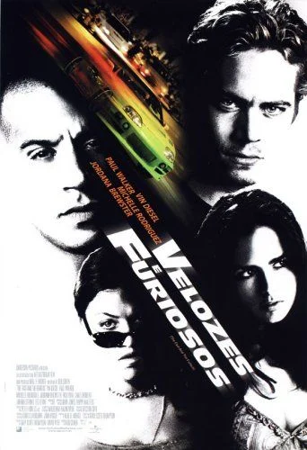

Rachas de rua
2001 a 2006
Os três primeiros filmes giram em torno da cultura automobilística: tuning, apostas, disputas de bairro e, em Desafio em Tóquio, o drift. A escala é pequena e os riscos são pessoais.
Mais de vinte anos de carros, equipe e exagero: como uma história de rachas em Los Angeles virou uma das maiores franquias do cinema.

A saga nasceu em 2001 com Velozes & Furiosos, dirigido por Rob Cohen. A ideia partiu de uma reportagem da revista Vibe sobre as corridas ilegais de rua em Nova York, e o filme transportou esse universo para a Califórnia, com carros japoneses modificados, música alta e uma cultura de bairro em que o respeito se ganha no asfalto.
O primeiro filme apresentava um policial infiltrado, Brian O'Conner, e um piloto cercado de lealdades, Dominic Toretto. O que parecia uma história de ação sobre um nicho acabou criando algo maior: personagens que o público queria rever, e uma ideia que sustenta todos os filmes até hoje, a de que família não é só sangue, é quem fica ao seu lado.
Uma forma comum de dividir a franquia é pelo tipo de história que cada grupo de filmes conta.
2001 a 2006
Os três primeiros filmes giram em torno da cultura automobilística: tuning, apostas, disputas de bairro e, em Desafio em Tóquio, o drift. A escala é pequena e os riscos são pessoais.
2009 a 2013
Com a volta do elenco original, a série vira um filme de assalto. Operação Rio é o ponto de virada: entram Hobbs, os planos elaborados e a equipe como protagonista.
2015 em diante
As perseguições dão lugar a missões internacionais, com tom de espionagem, vilões com redes enormes e cenas cada vez mais exageradas, o que virou marca registrada da série.
Anos de estreia internacional e títulos como foram lançados no Brasil.
Direção: Rob Cohen
Brian, policial infiltrado, entra no mundo dos rachas de Los Angeles para investigar uma onda de roubos de caminhões ligada ao grupo de Dominic Toretto.
Direção: John Singleton
Em Miami, Brian aceita uma missão para limpar a ficha e recruta o amigo de infância Roman Pearce para se infiltrar na rede de um traficante.
Direção: Justin Lin
O adolescente Sean Boswell vai morar no Japão e descobre o drift. O filme apresenta Han, personagem que ganha importância nos filmes seguintes.
Direção: Justin Lin
Dom e Brian voltam a se encontrar depois de uma tragédia e passam a investigar o mesmo traficante, reunindo o elenco original.
Direção: Justin Lin
Foragidos no Rio de Janeiro, Dom, Brian e Mia planejam um grande assalto contra um empresário corrupto, enquanto o agente Hobbs vai atrás deles.
Direção: Justin Lin
Hobbs recruta a equipe para enfrentar uma organização criminosa na Europa. A surpresa é que Letty, dada como morta, aparece do outro lado.
Direção: James Wan
Deckard Shaw quer vingança pelo que aconteceu com o irmão. As filmagens foram marcadas pela morte de Paul Walker, em 2013, e o filme termina com uma despedida ao ator.
Direção: F. Gary Gray
Dom trai a própria equipe, pressionado pela hacker Cipher, e seus antigos aliados precisam se unir a inimigos para trazê-lo de volta.
Direção: David Leitch
Derivado da série. Os antigos rivais Luke Hobbs e Deckard Shaw precisam trabalhar juntos para impedir a liberação de um vírus perigoso.
Direção: Justin Lin
A equipe tenta recuperar um dispositivo capaz de controlar sistemas de armas, e Dom enfrenta o irmão Jakob, de quem estava afastado.
Direção: Louis Leterrier
Dante, filho do vilão do Rio, volta anos depois para destruir tudo o que Dom construiu, ligando o filme diretamente ao quinto da série.
Poucas franquias mudaram tanto de gênero e continuaram populares. Os filmes saíram das corridas de rua para o cinema de assalto e depois para a espionagem, sem abandonar o tema da lealdade entre amigos, e isso ajudou a manter o público fiel por décadas.
A série também teve peso comercial, com bilheterias bilionárias em vários capítulos, e ajudou a espalhar uma estética de carros e de tuning para um público muito maior do que o dos rachas reais. A despedida a Paul Walker em Velozes & Furiosos 7, com a música See You Again, segue como um dos momentos mais lembrados da franquia.